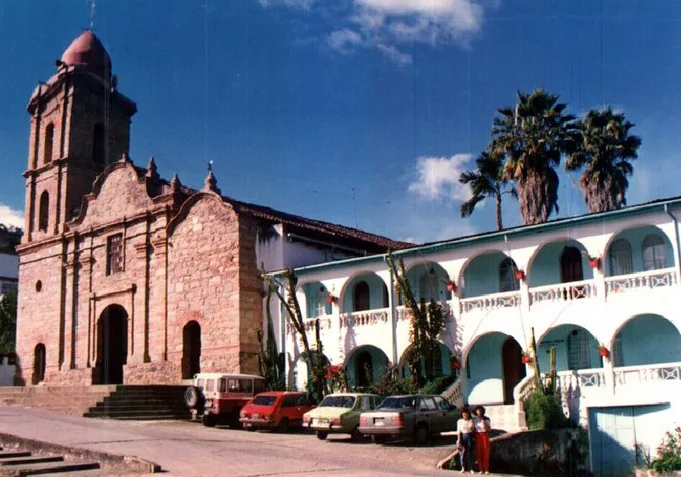

Una escuela por radio necesita más que una emisión. Alguien debe poder recibirla, reconocer cuándo escuchar, relacionarla con una actividad y continuar después. La historia de Radio Sutatenza resulta especialmente fértil para el diseño porque obliga a seguir esas conexiones. El aparato ocupa el centro de la fotografía; el servicio educativo estaba repartido entre objetos, publicaciones y personas.
Señal Memoria sitúa el comienzo de Radio Sutatenza en 1947, en el municipio boyacense, con el sacerdote José Joaquín Salcedo. El proyecto se desarrolló mediante las Escuelas Radiofónicas y Acción Cultural Popular. Su origen católico no es un detalle que deba borrarse para presentar la experiencia como una innovación tecnológica neutral: forma parte de su orientación y de la organización que la sostuvo. [1]
La documentación describe receptores de sintonía fija, cartillas y formación de instructores. También registra el semanario El Campesino desde 1958. Cada medio permitía una operación diferente: la voz podía ordenar una secuencia; el impreso permanecía disponible para volver sobre ella; una persona cercana podía acompañar la actividad. La combinación ayuda a comprender por qué transmitir contenido y organizar aprendizaje no son exactamente la misma tarea. [1]


La sintonía fija ofrece una pregunta de interfaz particularmente interesante. Reducir las opciones puede facilitar el uso de un aparato, pero también restringe lo que ese aparato deja elegir. La misma decisión puede mejorar una función y limitar otra. En vez de elogiarla como simplicidad absoluta, conviene identificar a quién servía y qué autonomía conservaba quien escuchaba.
El receptor Philips de 1933 que acompaña este texto es una referencia tipológica conservada en un archivo museístico. No fue identificado como un equipo de ACPO. Su caja, su dial y sus controles ayudan a pensar la radio como un objeto situado, pero no permiten reconstruir cómo era una sesión de las Escuelas Radiofónicas. La fotografía de Sutatenza, tomada en 2012, tampoco representa el municipio en 1947.
Para imaginar el problema de servicio sin inventar una clase, basta enumerar dependencias. Si una actividad requiere papel, el material debe llegar. Si necesita una secuencia horaria, esa información debe ser comprensible. Si se interrumpe la recepción, hace falta alguna manera de recuperar el hilo. Son preguntas aplicables a la educación a distancia; la respuesta histórica de cada escuela necesita documentos o testimonios específicos.
El Museo Nacional reunió receptores, fotografías y publicaciones en una exposición sobre memorias del mundo campesino. La diversidad de soportes es relevante porque impide contar la experiencia solo a través de una voz conservada. Un impreso, una imagen y un aparato aportan evidencias distintas. Sus fechas y procedencias permiten discutir cómo se organizaba el proyecto, sin convertir un objeto aislado en prueba de su alcance completo. [2]


Queda además la cuestión editorial: quién define los conocimientos que se enseñan y la forma de presentarlos. Abrir un canal de acceso no elimina esa asimetría. La radio puede acercar una explicación y mantener una relación predominantemente unidireccional. Investigar las respuestas, adaptaciones o desacuerdos de los participantes exigiría buscar sus voces, no deducirlas de la misión declarada por la institución.
Esta cautela evita dos simplificaciones. La primera sería tratar al mundo campesino como un vacío al que llegó por primera vez el conocimiento. La segunda, medir el valor del proyecto solo por la novedad técnica. Existían saberes y prácticas previos; el encuentro con un programa educativo podía producir acuerdos y tensiones. Sin una muestra suficiente de experiencias, no corresponde reducir ese encuentro a éxito universal o imposición uniforme.
La relación con las plataformas actuales resulta útil si conserva la distancia histórica. Una aplicación puede distribuir lecciones con facilidad y seguir dependiendo de tiempo, conectividad, materiales y apoyo. La interfaz visible no resuelve esas condiciones por decreto. Radio Sutatenza permite formular una exigencia vigente: diseñar el aprendizaje completo y explicar qué depende del medio, qué de la organización y qué de quien participa.
La escuela tenía un dial, pero no terminaba en él. Una tecnología educativa se evalúa por las relaciones que sostiene y las decisiones que deja discutir. El aparato puede facilitar un encuentro; convertirlo en educación exige cartillas, tiempos, acompañamiento y un contexto donde aprender.
Fuentes.
- RTVC / Señal Memoria — Radio Sutatenza, mayoría de edad
- Museo Nacional de Colombia — Memorias del mundo campesino
Lectura histórica de documentos institucionales. Sin entrevistas a antiguos oyentes. El receptor ilustrado es un Philips 834A de 1933: no se presenta como equipo utilizado por ACPO.
Fuentes consultadas el 15.11.2026. Análisis e interpretación: RUMMOR. Edición privada para revisión.